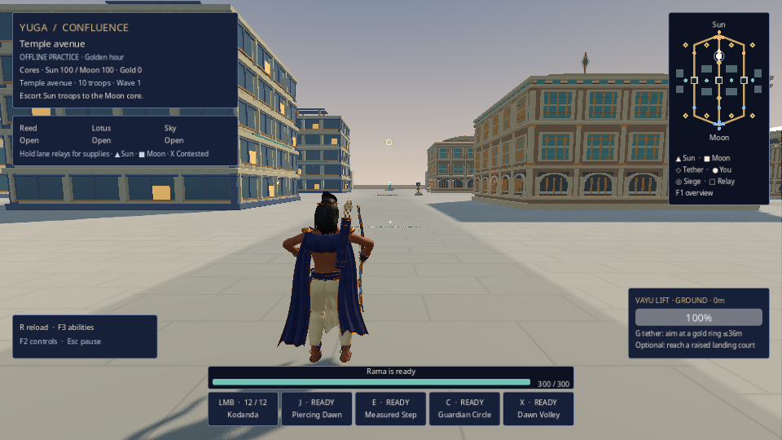
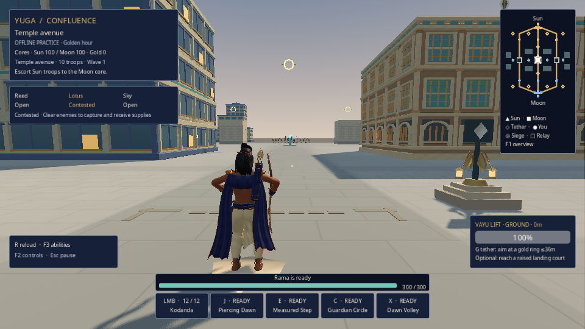
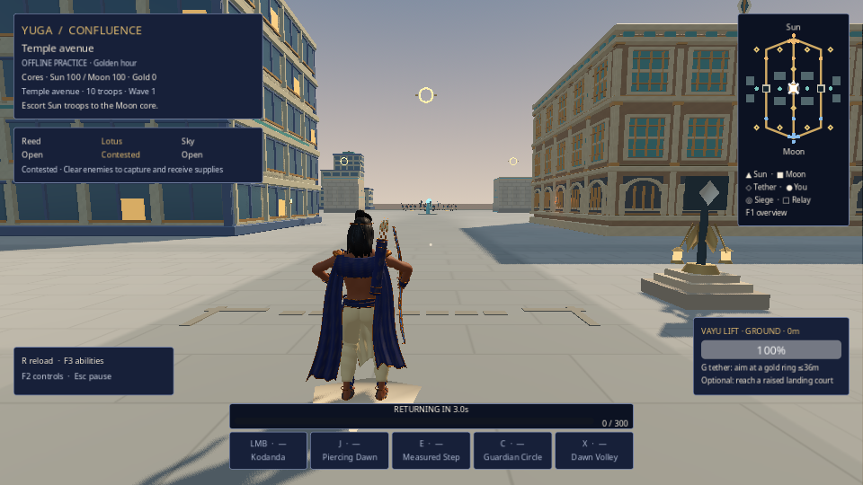
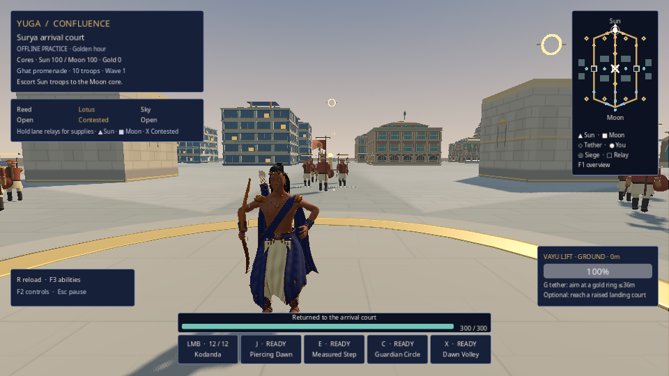
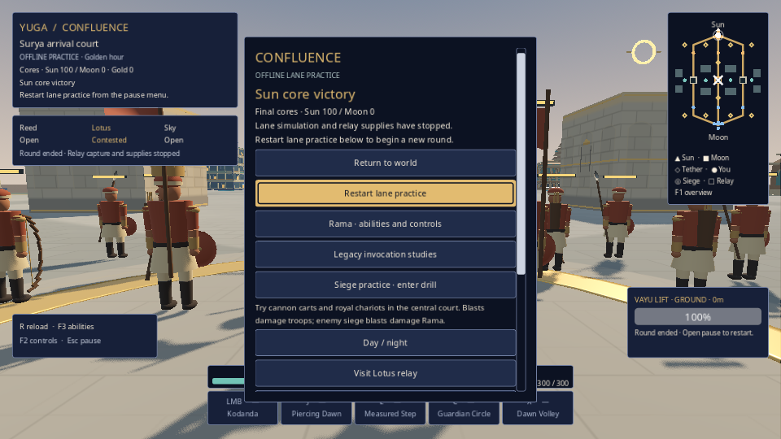
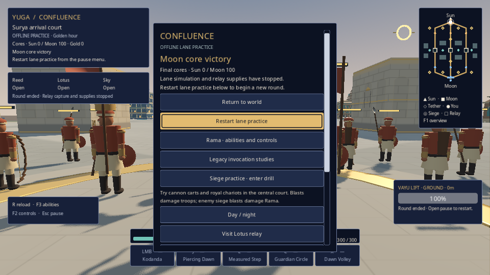
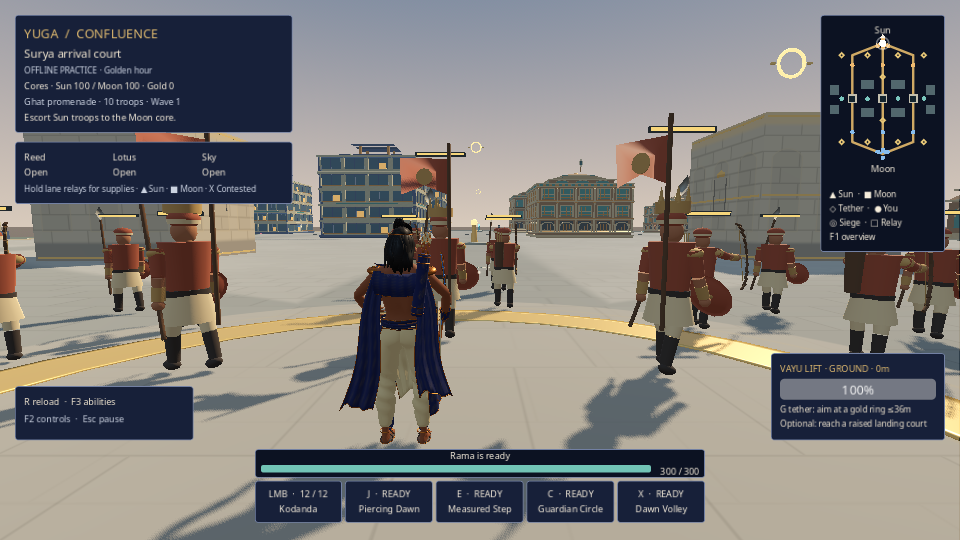

staged-r1
Untouched framebuffer originals. Native window 960×600; integrated framebuffer 960×540. Read each JSON for actual phase, state and fixture scope.
S01-STAGED-lane.png · stateSTAGED AUTHORITY / simulation hold: lane
S02-STAGED-held-relay.png · stateSTAGED AUTHORITY / simulation hold: relay-held
S03-STAGED-contested-relay.png · stateSTAGED AUTHORITY / simulation hold: relay-contested
S04-STAGED-defeat.png · stateSTAGED AUTHORITY / simulation hold: defeat
S05-STAGED-respawn-atlas.png · stateSTAGED AUTHORITY / simulation hold: respawn
S06-STAGED-sun-outcome.png · stateSTAGED AUTHORITY / simulation hold: outcome-sun
S07-STAGED-moon-outcome.png · stateSTAGED AUTHORITY / simulation hold: outcome-moon
S08-STAGED-draw-outcome.png · stateSTAGED AUTHORITY / simulation hold: outcome-draw
S09-native-restart-after-STAGED-outcomes.png · stateNative navigation / observed loading phase.
auto-constructing-1.png · stateNative navigation / observed loading phase.
auto-constructing-2.png · stateNative navigation / observed loading phase.
auto-constructing-3.png · stateNative navigation / observed loading phase. auto-loading-1.png · stateNative navigation / observed loading phase.
auto-loading-1.png · stateNative navigation / observed loading phase. auto-loading-2.png · stateNative navigation / observed loading phase.
auto-loading-3.png · stateNative navigation / observed loading phase.
auto-queued-1.png · stateNative navigation / observed loading phase.
auto-queued-2.png · stateNative navigation / observed loading phase.
auto-queued-3.png · stateNative navigation / observed loading phase.
auto-loading-2.png · stateNative navigation / observed loading phase.
auto-loading-3.png · stateNative navigation / observed loading phase.
auto-queued-1.png · stateNative navigation / observed loading phase.
auto-queued-2.png · stateNative navigation / observed loading phase.
auto-queued-3.png · stateNative navigation / observed loading phase.